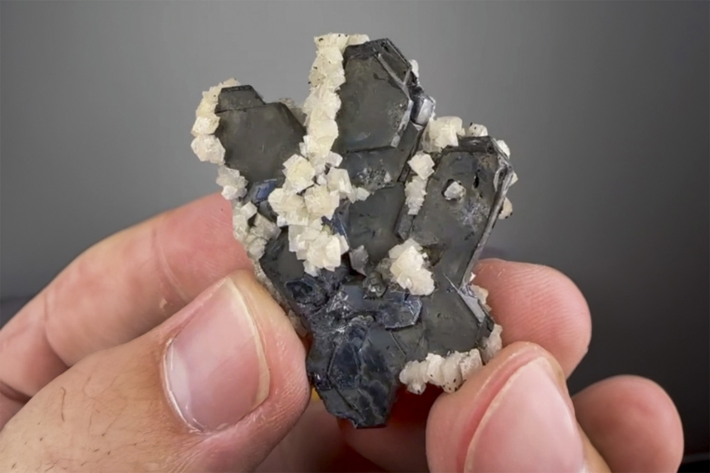

Galena
"Spinel Law Penetration Twin Galena with Dolomite"
II-10761
Fletcher Mine, West Fork, Reynolds County, Missouri, USA
Purchased 7/13/2026 from Persson Rare Minerals for $100.00
Core Collection • In Collection
Details
Storage Type: Drawer
Storage Location: C1D3 Dark Matter Miniatures
Size class: TBD (0)
Dimensions: 4.2 × 3.0 × 0.7 cm
Mass: 20.7700004577637 g
Luster: Unrecorded